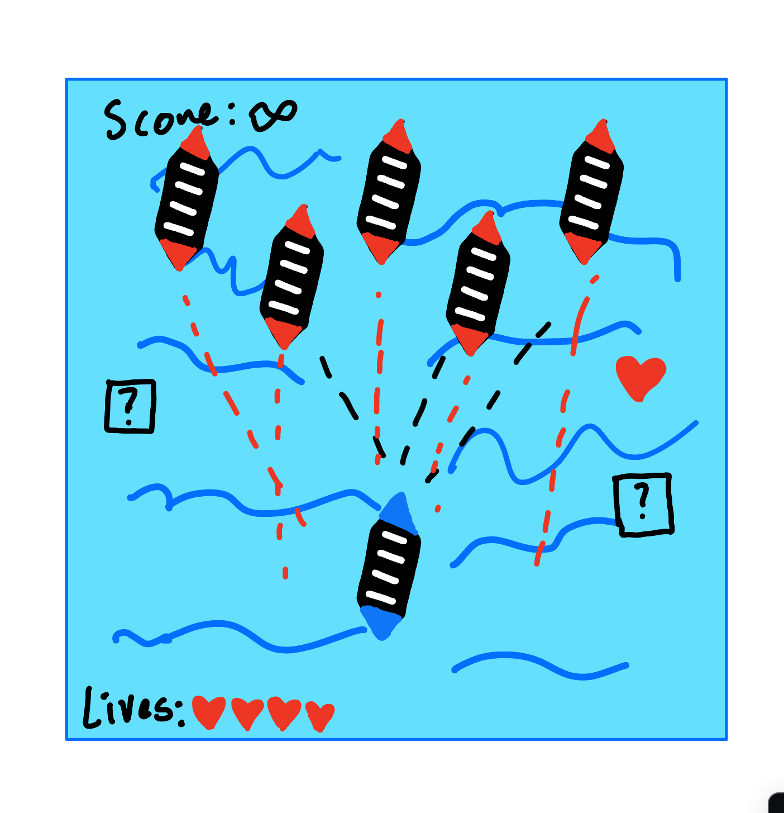
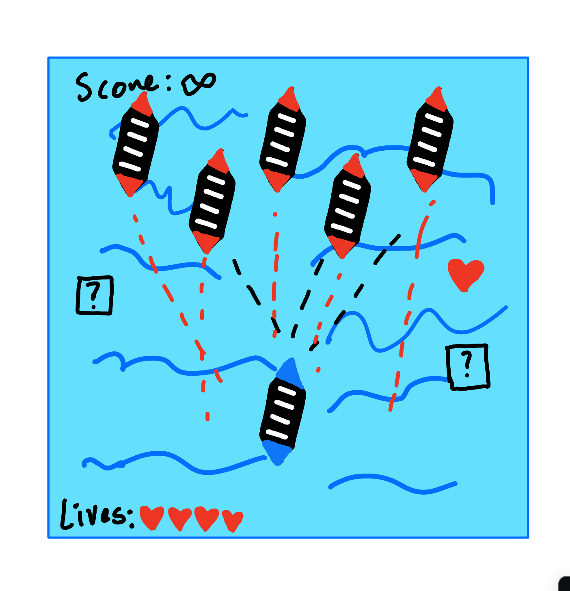

6. Gameplay
Mechanics: Movement, Shooting, Power-up collection and Use
Control: Keyboard (WASD) and Mouse (Aiming and Clicking)


It's like the circle blast homework but completely flipped on its head with new features.
Action, Shooter, Strategy
This game is a desktop experience.
You are a ship traveling on the sea attempting to dodge waves of enemy ships attempting
to collide and shoot you with their cannonballs.
Style: Cartoonish and animated
Sound: Simple - Shooting, Hit, and Game Over sound effects (more than likely 8-bit).
Mechanics: Movement, Shooting, Power-up collection and Use
Control: Keyboard (WASD) and Mouse (Aiming and Clicking)

My process began with me using the circle blast as a refrence point to use foe the basis of my game.
Following my project proposal, I started by finding and replacing the sprite images for the original circle Blast.
I removed the circles and revamped the class to inherit from PIXI.Sprite instead. I scaled all the sprites to make sure they make sense on
the page and moved on. That was the easy part.
I would consult my good friend Chat GPT to correct bugs and errors that I got in my code or to get an idea of how to implement a feature.
For example, I wanted to figure out how to get the player ship to face in the direction of where the mouse is, and i used Chat GPT to help.
I ran into roadblock when it came to managing the collisions becuase of the sprites, and I figured out that I had to scale them down in order
to make them more precise. I also ran into a roadblock when it came to getting the bullets to shoot in the direction where the mouse is on the screen.
I had to make a normalized direction vector and then apply it to the bullet which was difficult to understand.
In terms of special features, I added a powerup which is basically a chance for the player to get an extra life added.
I think it's an interesting mechanic because after 8 seconds theres a 30% change that an extra life will spawn, so
the extra randomness added into the game will help determine how long the player will survive when it gets very hectic.
I met the requirements by having and fucntioning app in PIXI and is pretty easy to use. It goes beyond circle blast and
what we did in class. It does look good and it doesn use an ES6 class that I made on my own
I believe that I did well on this project, and think I should get a 90.
Sources:
Enemy Ship
Player Ship
For the bullet sprite, I used the bomb but cut off the rope and fire.
Bullet SpriteFor the background, I used an AI art generator called NightCafe to make the image I used (Its a pretty cool website)
Background AI Generator